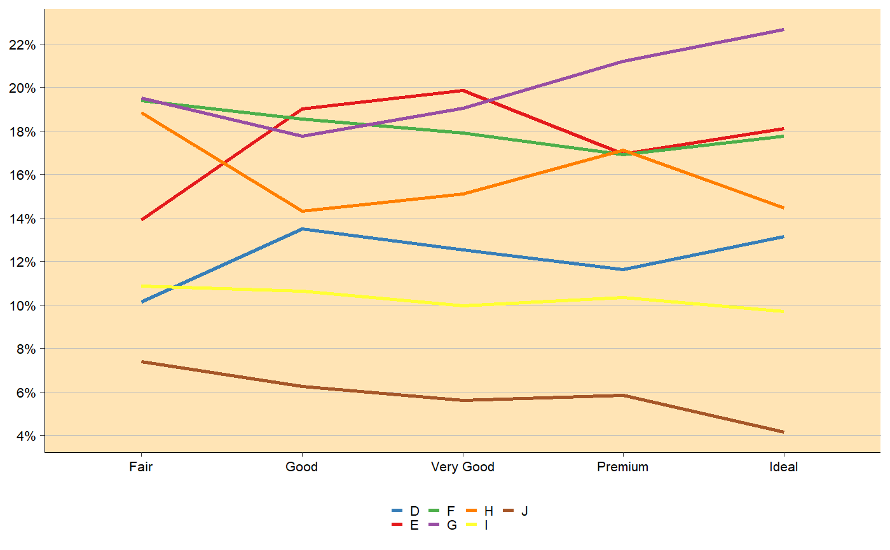
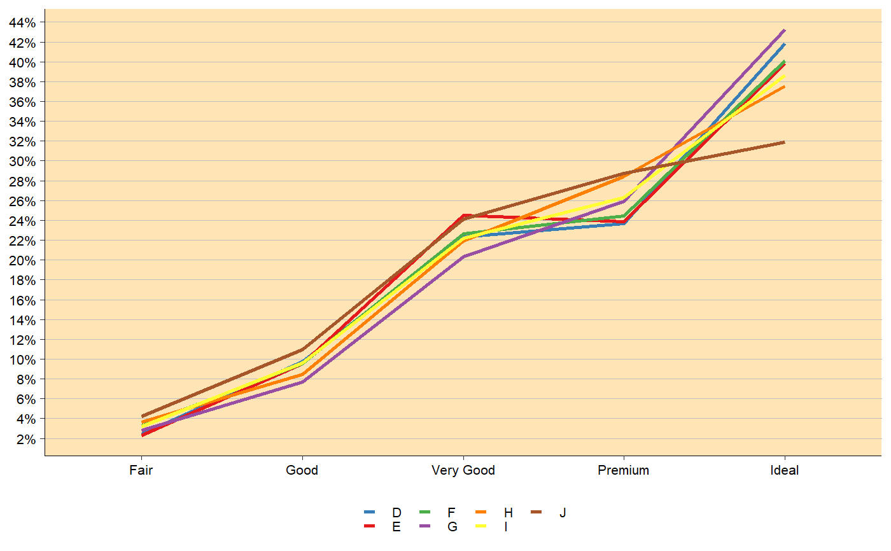
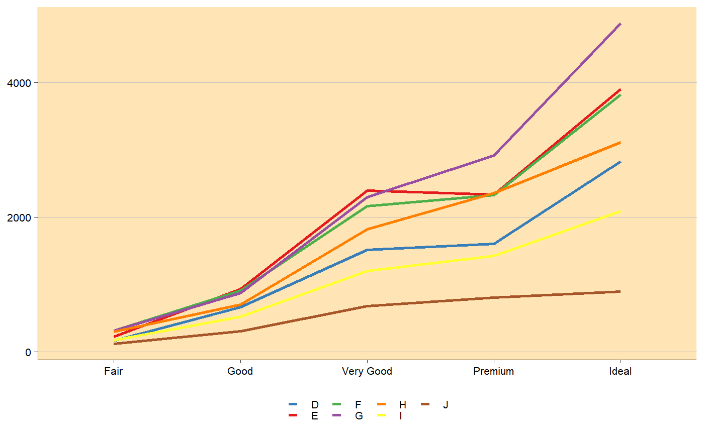
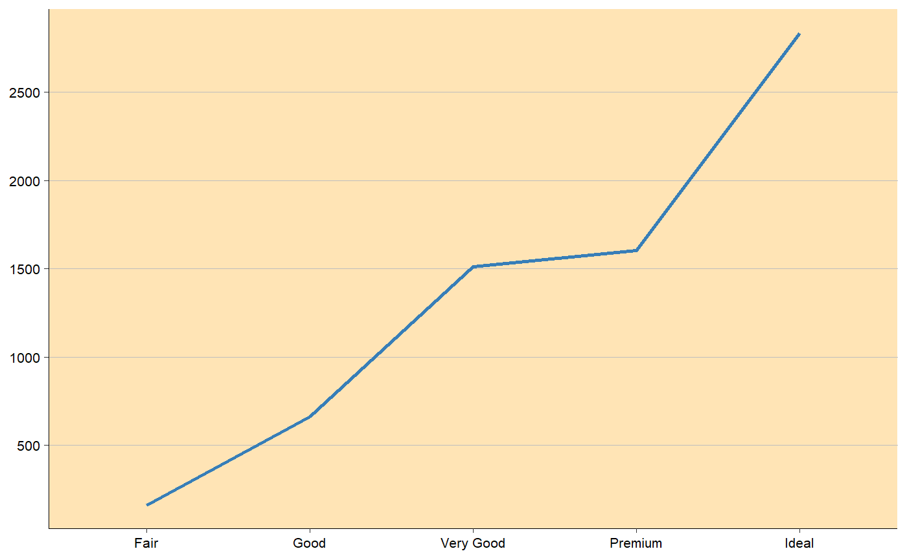

Line plot function
line_plot.RdStandard line plot using ggplot2. Y-variable not necessary.
line_plot(df, x_var, color_var = NULL, y_var = NULL, group_by_x_var = TRUE, y_percent = TRUE, percent_accuracy = 1, y_lim = NULL, y_breaks = 2000, y_breaks_end = 1e+05, line_size = 1, title = NULL, subtitle = NULL, title_size = 14, subtitle_size = 10, title_margin = 1, y_lab = NULL, x_lab = NULL, background_color = "moccasin", panel_grid_color = "grey", panel_grid_size = 0.3, axis_size = 0.3, axis_text_angle = 0, text_size = 8, fill_colors = c("#377EB8", "#E41A1C", "#4DAF4A", "#984EA3", "#FF7F00", "#FFFF33", "#A65628", "#F781BF"), legend_pos = "bottom", legend_labels = ggplot2::waiver(), label_breaks = ggplot2::waiver(), legend_background = "transparent", legend_row = NULL, legend_col = NULL)
Arguments
| df | Data frame. |
|---|---|
| x_var | Variable for x-axis, use string name. Recommended that x_var is in character in df (not necessary). |
| color_var | Variable for the different colors in lines, use string name. Use NULL if only one color for lines. |
| y_var | Variable for y axis, if NULL, count is used. |
| group_by_x_var | Boolean indicating if percentages should be for x_var or color_var. |
| y_percent | If TRUE, y-axis is in percent form. Otherwise in count form. |
| percent_accuracy | Set accuracy for |
| y_lim | Limit on y-axis. |
| y_breaks | Length between each break on y-axis. |
| y_breaks_end | Break end, default for 100000. Works for all count values below that. |
| line_size | Size of the lines. |
| title | Plot title, NULL if no title. |
| subtitle | Small text under title, NULL if no subtitle. |
| title_size | Text size of title in pt. |
| subtitle_size | Text size of subtitle in pt. |
| title_margin | Distance between subtitle and title in pt. If no subtitle, title_margin 0.5*title_size. |
| y_lab | Y-axis label, use NULL for no label. |
| x_lab | X-axis label, use NULL for no label. |
| background_color | Color of the panel background. |
| panel_grid_color | Color of the panel grid lines. |
| panel_grid_size | Size of the panel grid lines in plot, useful to change if large dpi! |
| axis_size | Size of the axis lines. |
| axis_text_angle | Angle of the tick texts, 45 is recommended for many x levels. |
| text_size | Size of the text in pt. |
| fill_colors | Colors of the different categories in color_var. |
| legend_pos | Position of the legend in plot, if c(1,1), c(1,0) etc, legend inside plot. |
| legend_labels | Label for each legend key. |
| label_breaks | Order of the legend keys. |
| legend_background | Color of the legend background. |
| legend_row | How many rows for the legends. |
| legend_col | How many columns for the legends. |
Value
Ggplot object containing line-plot.
Examples
library(ggplot2) library(dplyr) # y_percent = TRUE line_plot(df = diamonds, x_var = 'cut', color_var = 'color', y_breaks = 2)line_plot(df = diamonds, x_var = 'cut', color_var = 'color', group_by_x_var = FALSE, y_breaks = 2)# y_percent = FALSE line_plot(df = diamonds, x_var = 'cut', color_var = 'color', y_percent = FALSE, y_breaks = 2000)# y variable included df <- diamonds %>% group_by_('color', 'cut') %>% summarise(y = n()) line_plot(df = df, x_var = 'cut', color_var = 'color', y_var = 'y', y_percent = FALSE, y_breaks = 2000)line_plot(df = df[df$color == 'D',], x_var = 'cut', y_var = 'y', y_percent = FALSE, y_breaks = 500)